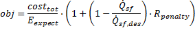
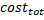
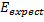
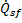
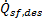
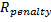

Optimization
Page Overview
The Optimization page allows you to select design parameters and optimize their value with respect to expected plant productivity over the year. Before running the optimization tool, you will need to add and configure optimization variables in the Variable Table. After running an optimization, you can choose whether to apply the optimized values shown in the Optimization Log by clicking the Apply to inputs button.
SolarPILOT uses the COBYLA algorithm (part of the NLOpt library) to optimize the selected variables. This algorithm represents the objective function as a multi-dimensional linear surface within a local trust region, and incorporates nonlinear constraints using a linear approximation of the constraint boundary. In this case, the Allowable peak flux on the Receiver page serves as an upper bound, and SolarPILOT calculates the actual peak flux for a given design and compares it with this value. A peak flux exceeding the limit is deemed to be an infeasible solution, and the algorithm responds by attempting to return to feasibility with modifications to the optimization variables. Note that because the optimization algorithm uses a linear approximation of both the objective function and the constraints, the actual peak flux of the optimal design may exceed the maximum limit that you specify. Be sure to check the optimized system to ensure that it meets common-sense criteria for a layout and does not substantially violate peak flux requirements. The optimization wizard should be used as a tool for gaining information, and is not to be understood as an exhaustive and infallible design optimizer!
For more information on the COBYLA algorithm, please refer to the NLOpt documentation wiki. The algorithm is used in this setting for several reasons: first, it is capable of non-linear objective function optimization. A problem is non-linear if either the objective function or the constraints respond to changes in variable values in a way that cannot be represented by the summation of linear (variable times coefficient) terms. Any variable-to-variable interaction, or response modeled as a variable to a non-unity power, implies nonlinear behavior. Integer or discrete variables are also nonlinear. Secondly, the algorithm allows for derivative-free, "black box" optimization, wherein the objective function and constraint derivatives are not attainable via a closed-form or explicit formula. Objective function derivatives are required to identify directions of fastest improvement, and these derivatives can only be estimated in this case by evaluating the objective function multiple times at different combinations of variable values, then numerically calculating derivatives. Lastly, COBYLA is one of only a handful of non-linear, derivative-free optimization algorithms that can accommodate constraints of the same classification. Each time SolarPILOT provides an objective function to COBYLA, it also calculates the peak receiver flux using the reference condition that you specify on the Layout Setup page and sends the information to COBYLA to determine whether the constraint has been satisfied, and in which direction the variable values can move while maintaining feasibility.
The objective function used by SolarPILOT is:

where
 |
$ |
Total installed cost |
 |
MWh |
Expected simulation power production (energy generated during field layout sample days) |
 |
MWt |
Power produced by the field at the reference condition |
 |
MWt |
Specified solar field power production on the Layout Setup page |
 |
Penalty factor for under-design power output from the Optimization page |
Settings
The settings parameters allow you to configure the optimization algorithm by managing (default) initial step size, maximum iterations, convergence tolerance, and a penalty for systems that cannot deliver the specified thermal power output.
Initial step size
The (default) initial step size provides a guess to SolarPILOT for specifying the relative amount to vary each optimization variable on the first step. The Initial step size value multiplies the current value of each parameter to add to the Variable table to provide a step size. For example, if you add tower optical height to the variable table, and if the current value specified in the interface is 180 [m], the resulting initial step size for that variable would equal (initial step size -- say 0.06) * (180 [m]) = 10.8 [m].
After adding parameters to the variable table, you can modify the initial step size and other limits as needed.
Choosing initial step size values The initial step size provides the optimization algorithm with a test point to determine how to subsequently improve the objective function. Step size may differ for each variable that you optimize. Criteria for choosing the best step size include the following:
|
Maximum iterations
The maximum number of iterations (field layout and performance calculation runs) allowed before forcing algorithm termination. Additional iterations will typically allow SolarPILOT to further improve the objective function, but requires more computational time. Consider increasing the maximum iterations as the number of optimized variables increases, as increased problem dimensionality also increases the difficulty of finding an optimal solution.
Convergence tolerance
The convergence tolerance indicates the minimum observed change in the objective function from iteration to iteration before the algorithm terminates. A smaller tolerance will require more iterations to complete, while a relaxed tolerance will solve more quickly, but may yield inferior variable values.
Power shortage penalty
Systems that do not produce the specified Solar field design power on the Layout Setup page are penalized according to the extent to which they are under power, with the difference being multiplied by the power shortage penalty. See the objective function description at the top of this page for mathematical context. For example, a power shortage penalty of 0.5 with a 500 MWt Solar field design power on a layout that produces only 250 MWt would result in an objective function penalty that is 125% of the unpenalized objective.
Variable Table
Add
Launch a dialog in which you can select design parameters for optimization. To add parameters, check the associated box, and they will appear in the Variable Table.
Remove
Remove the selected variable(s) from the table. Select variables by left-clicking the row label, or select multiple rows by Shift+left click (select range) or Ctrl+left click (specific rows).
Variable
The variable indicates the coded name for the SolarPILOT input value. You can modify this string to change the variable, if desired. To view coded names, navigate to the Simulation Variable Table on the Parametrics page and click Variables...
Lower Bound
The minimum allowable value that the variable can assume. If no lower limit, use 'none'.
Upper Bound
The maximum allowable value that the variable can assume. If no upper limit, use 'none'.
Initial Step
The initial step size to use for the optimization algorithm. See above for more information on choosing initial step size.
Optimization Log
The optimization log provides a history of variable values, objective function values, peak flux, and plant cost for each iteration that is considered.
Clear Log
Clear the contents of the optimization log.
Save Log
Save the contents of the optimization log to a file.
Apply to Inputs
After running the optimization routine, you can apply the optimized variable values to the SolarPILOT interface inputs. After clicking this button, the input values will take on the optimized value. You will need to regenerate the heliostat field layout after taking this action.
Created with the Personal Edition of HelpNDoc: Free EBook and documentation generator